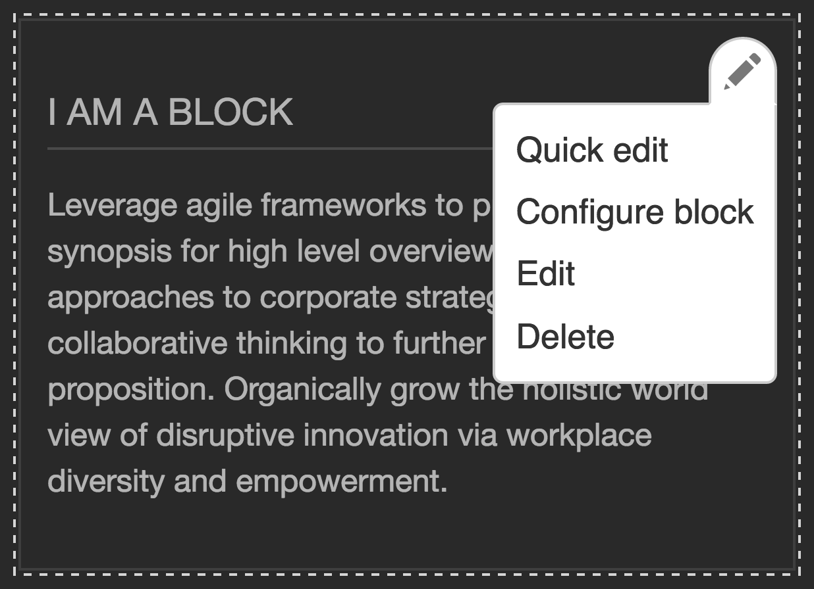
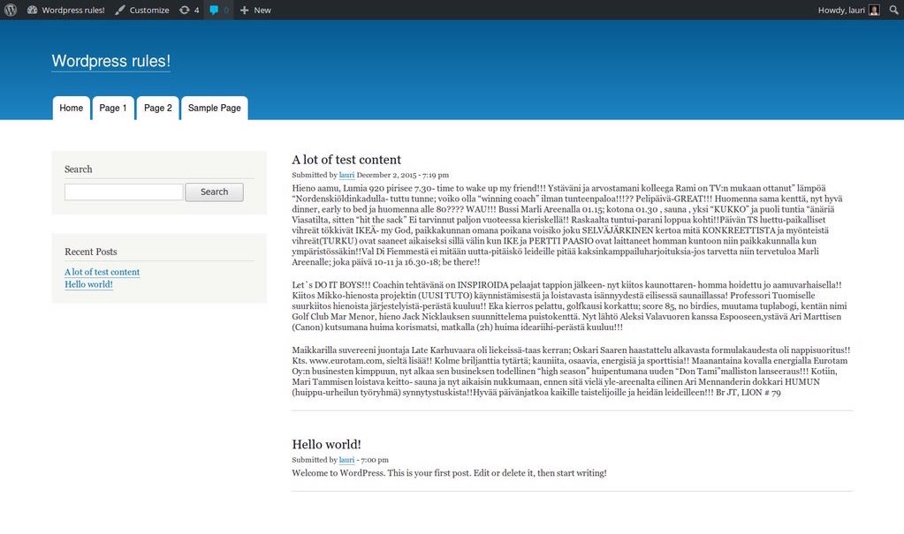

Just Right: Goldilocks and CMS theme systems
Lauri Eskola
lauriii
Drupal 8 theme system co-maintainer
Drupal Craftsman @ Druid
Scott Reeves
Cottser
Drupal 8 theme system co-maintainer
Stable theme maintainer
Provisional D8 core committer
Team Lead @ Digital Echidna
Content Management System
Scott - CMS
(from Wikipedia) …is a computer application that supports the creation and modification of digital content using a common user interface and thus usually supporting multiple users working in a collaborative environment.
By their nature, content management systems support the separation of content and presentation.
Some examples: WordPress, Joomla, Drupal
Show of hands - how many people work with CMSes? (Estimate and say out loud for the recording)
How many people work with Drupal?
Theme System
Lauri - Theme system
Theme system allows for flexible markup output
Briefly explain what modules are in Drupal.
Modules can provide markup and overrides - for example contextual links in Drupal (advance to next slide)
Themes can be generic or application specific, and they also have inheritance (tree structure)
A site can have multiple themes, the simplest example would be admin theme and default user-facing theme. But you could also have more complex rules than this.

Frameworks have
more limited UIs
Scott - Frameworks
Lower complexity in the theme system, often no theme system, you need to write code to do a lot of things instead of installing other people's code (in other words installing modules)
Example: Symfony (PHP framework) people may think Drupal 8 is using Twig wrong but they are not using Twig in a CMS context so it’s completely different. Twig is just a tool and the context in which it is used will change how it is used. We have to account for the site builder persona.
CMS often comes with preset templates and styling also.
The short version of this is in most cases we shouldn't be comparing CMSes to frameworks.
Personas
Lauri - Personas
These are the developer personas that interact with the theme system.
Accommodating the different personas (allowing both UI and code for many tasks) makes things more complex.
Certain decisions are made with these personas in mind and they may prioritize one or more over the others.
Different CMSes prioritize these in a different way (more on that later)
Frontend developer / themer
Themer is a Drupalism
Extended role - in Drupal 7 and earlier you would work a lot more with PHP
Theme functions - gone in Drupal 8 but part of the daily life of themers working with Drupal 7 and earlier.
Scares the hell out of designers.
Backend developer
Interact with the theme system, sometimes in ways that are bad for themers, for example overriding templates in a hacky way
Site builder
Has power from the UI to change things, and even can sometimes manipulate markup from the UI like in Views UI for example where they can add classes to the markup.
Mozilla personas
Scott - Mozilla Personas
Mozilla has personas that are documented with names and description of what they would do
George (designer)George (designer)
Denise (lightweight JavaScripter)Denise (lightweight JavaScripter)
Emily (corporate web app developer)Emily (corporate web app developer)
Alexander (Firefox add-on developer)Alexander (Firefox add-on developer)We thought this was interesting because it seemed similar to our module developer
Priorities
Scott - Priorities
Different CMSes prioritize the personas differently
Flexibility and how usable is it?
Often the prioritization is not explicit and sometimes whoever is driving the change determines the priorities, often with themselves in the #1 spot.

We looked at some other CMSes to try to determine a rough priority. This is not scientific.
Drupal
Site builder
Backend
Themer
We have a mission but not personas, we would like to more fine-grained personas defined.
It seems very difficult to fulfill all these types of users and it often ends up like a 3-way tug of war.
If anyone saw the Driesnote from New Orleans these are basically the priorities he presented as well, but we chose these priorities before that.
The template often prints everything defined from the UI (for example a generic content variable) and if you're not careful changing that can break the UI. The backend developer also has a lot of power to step in and change things.
site builder, backend, themer
WordPress
Themer
Site builder
Backend
Does it have personas?
Theming is not as usable but is very flexible. The site builder also can do a lot from the UI but in general WordPress is not targeted at backend developers.
themer, site builder, backend
Joomla
Site builder
Themer
Backend
At least has some rough personas
We looked at Joomla and…
it has a powerful UI which in some ways looks similar to Drupal, they call their blocks modules and you can actually manipulate the classes that go on those from the UI.
They hardcode things in templates more often so it gives more power to the themers over the backend developer.
site builder, themer, backend
Concrete5
Site builder
Backend
Themer
Does it have personas?
We looked at Concrete5 and…
it also has a powerful UI, and has many APIs and helpers that would make a backend developer feel at home. The theming experience in some ways looks similar to Drupal though.
site builder, backend, themer
We landed on the same prioritization as Drupal. Should we be looking closer at Concrete5 to see if we can learn anything or should we be looking at systems that seem to be more radically different?
Current situation
Problems
Lauri - Problems
On top of the clash that happens with these different personas,
the theme system has some other things to deal with.
Security
Autoescape
User generated content
Backwards compatibility
Don't break people's sites
Still be able to evolve
Stable theme is a hacky way to do this in D8 and adds another layer of complexity
UI/code mismatch
Set a field order in manage display
Themer overrides the template and moves the fields around
This breaks the UI. In the end themers have the final say for the most part.
Complexity
All these and related make the theme system complex and hard to evolve.
Examples
Logo is the simplest example
Lauri - Logo
In Drupal you can change the logo by using the theme settings in the CMS UI
You could also hardcode the logo into the page template
When you hardcode the logo markup you break the UI and potentially break translation/localization
WordPress doesn't have logo functionality at all
Forms are horrible to theme
Lauri - Forms
Drupal forms are good for backend and site builder but themers have very little control and can't create forms from a template
Some systems give you a bit more control over the forms for example Joomla and Concrete5. Joomla hardcodes all the form markup, Concrete5 has a form builder PHP class.
Forms were an early attempt in Drupal to build a component system but they are not very themer friendly.
Component-based theme system
Scott - Components
To give a bit more context to this discussion and present a possible solution we'd like to briefly talk about the idea of a component-based theme system.
A group got together earlier this month at DrupalCon New Orleans to discuss this idea.
Components should not be the same as data structures
Drupal has templates for nodes, fields, users, and so on. The theming experience is very tied to the data structures. This means simple things are hard and it's ultimately less flexible.
(optional) The theme system is basically decorating the data structures that have been built.
Don't break the UI
Because we are talking about a CMS we still need to preserve functionality in the user interface and allow the site builder to do many tasks.
We might need to make a trade-off in certain situations by disabling the UI in a smart way when the themer has overridden something.
Discuss
Have you seen personas put to good use in other projects?
Which persona(s) to prioritize (always the same?)
Who decides the priorities and when?
Should we prioritize at all?
Is making everyone happy possible, or do we need to compromise?
Have you seen any examples of a component-based architecture in other systems that we should be looking at?
Sprints Sunday